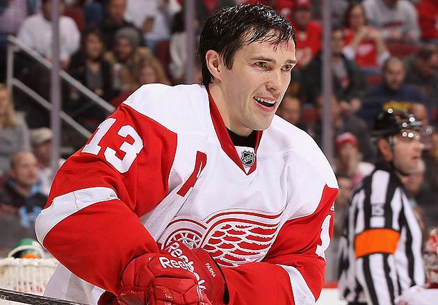

Hall of Fame Player Snapshots
In total the Red Wings have 58 players in the hall of fame. Below are the Red Wings' 10 best players in the Hall of Fame, check them out! To learn more about a specific player such as their draft year, when the played for Detroit, and their history in the NHL, click on the players image.
#9 Gordie Howe - Forward

#19 Steve Yzerman - Forward

#4 Red Kelly - Forward
#91 Sergei Fedorov - Forward

#14 Brendan Shanahan - Forward

#13 Pavel Datsyuk - Forward
#7 Ted Lindsay - Forward

#5 Nicklas Lidstrom - Defenseman

#1 Terry Sawchuck - Goaltender